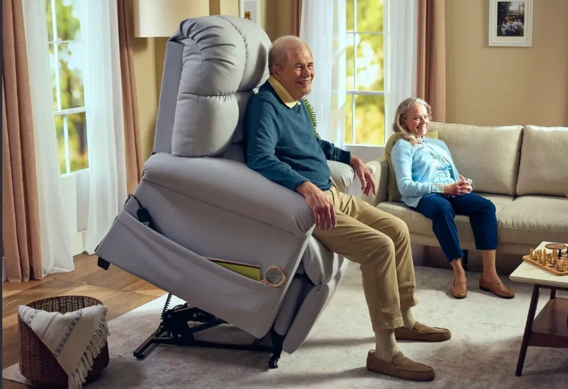
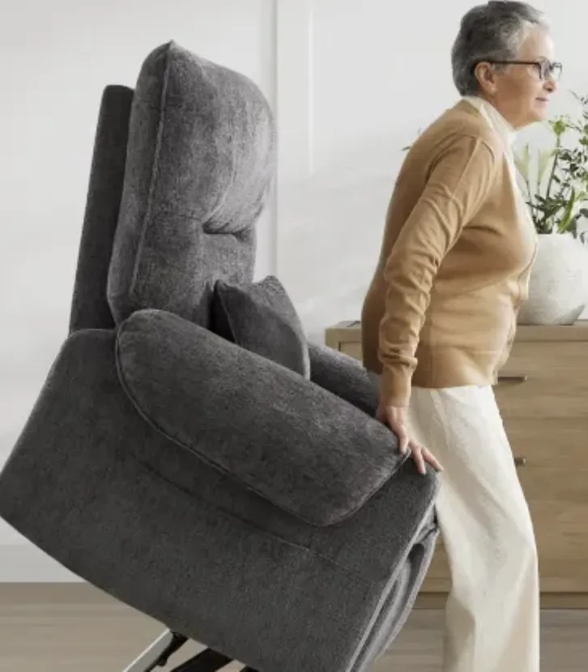
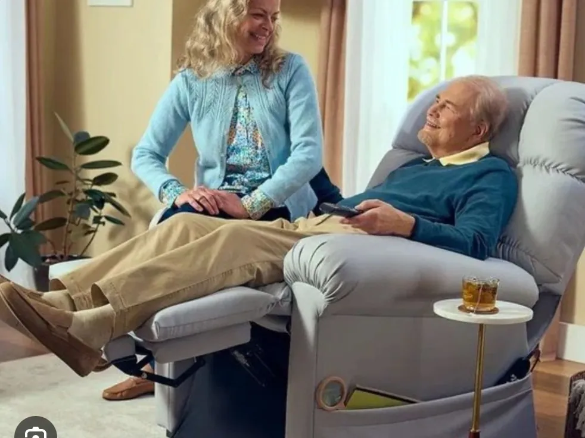
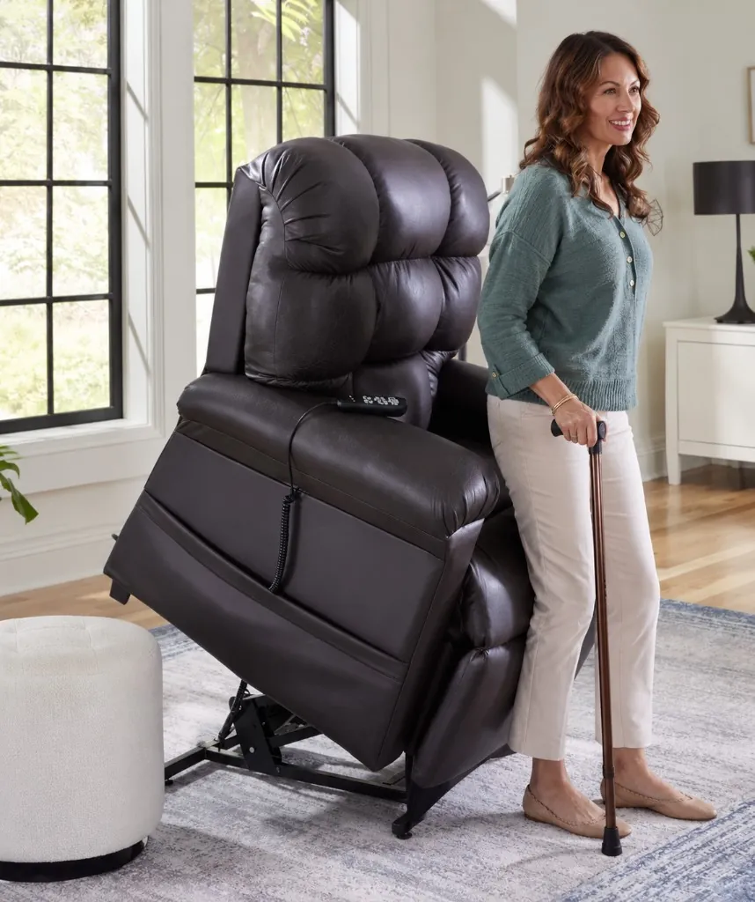
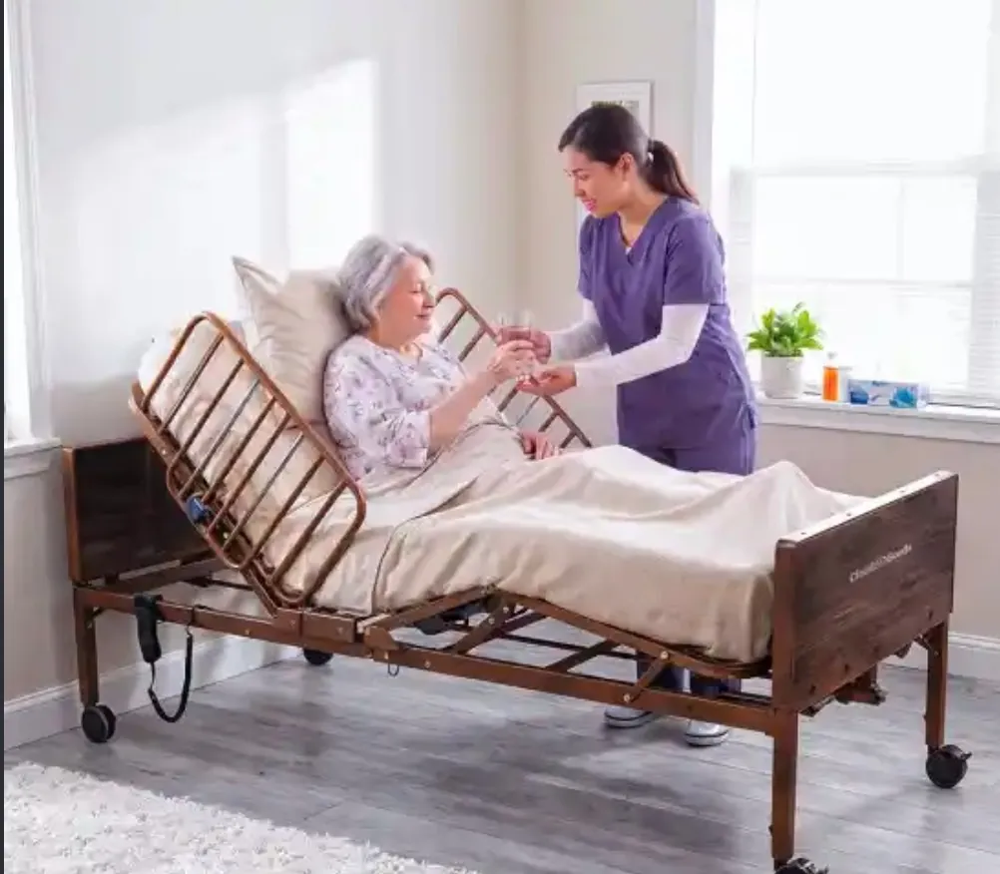
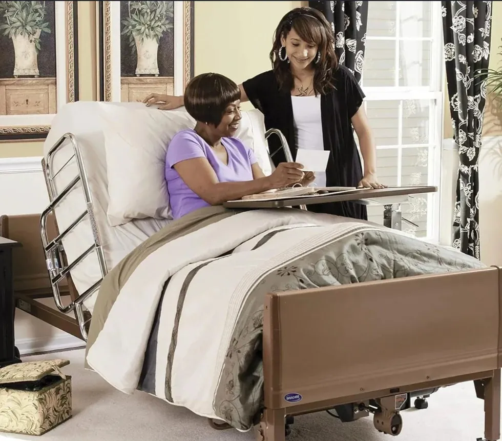

Medical-grade lift chairs
Power lift chairs that help you stand and sit safely—ideal after surgery or for limited mobility. Available for rental delivery in Charles County, MD.

Lift chair rental · Charles
Medical-grade lift chair and electronic bed rentals in Charles County, MD. Clean equipment for safer recovery at home.
Save on expensive medical equipment—borrow clean, medical-grade lift chairs with easy delivery in Charles County, MD.
We deliver medical-grade equipment across Maryland—including Charles County— so you can recover safely at home without buying.



Power lift chairs that help you stand and sit safely—ideal after surgery or for limited mobility. Available for rental delivery in Charles County, MD.


Adjustable beds that raise the head and feet for comfort and safer rest during recovery. Delivered to homes in Charles County, MD.
Serving Charles
District Medical Rentals helps families and individuals in Charles County, MD recover comfortably at home with reliable medical-grade lift chair and bed rentals.
Outside this area? Call us at 917-346-5309 — we may still be able to help.
Yes. We deliver medical-grade lift chairs and electronic medical beds to Charles County, MD. Call 917-346-5309 or book online.
Yes. Our medical-grade lift chairs gently help you stand up and sit down for safer recovery at home.
Get the support you need in Charles without buying an expensive chair. We deliver clean equipment and pick it up when you’re done.
Same-day and next-day delivery at no extra charge. We can even deliver before your surgery so everything is ready when you get home.
Lift chairs start at $125 per week and hospital beds start at $240 per week. Save 10% when you rent both, rentals longer than 4 weeks are discounted, and there’s no deposit. See our rates page.
Call 917-346-5309 or use our contact form. We’ll confirm what you need and your drop-off details.
Book your lift chair or medical bed today, or call 917-346-5309.
Book Now